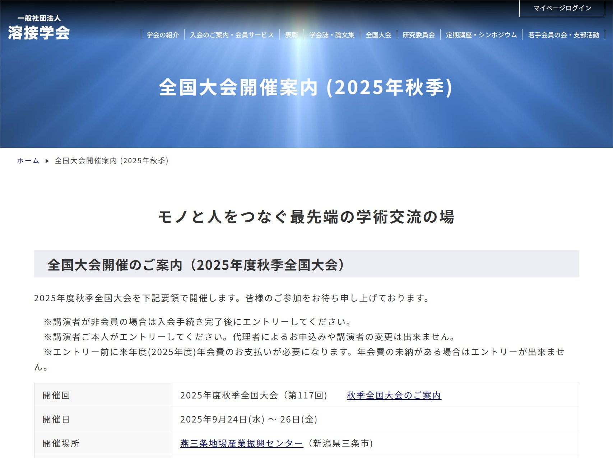

2025.06.20報告
報告：9月24日～26日に新潟県三条市で行われる「溶接学会2025年度秋季全国大会(第117回)」に、柴原研究室から D3加藤拓也さん、王聞達さん、D1橋場大輔さん、M2佐々木駿伍さん、山邉晃瑠さん、B4清水大毅さん、原田青空さん、横山侑祐さん、山本航平さん の計11件の発表をエントリーしました。
2025/6/20
2025年9月24日(水) ～ 26日(金)に新潟県三条市で行われる
溶接学会2025年度秋季全国大会（第117回)
において、柴原研究室から
D3：加藤拓也さん、王聞達さん
D1：橋場大輔さん
M2：佐々木駿伍さん、山邉晃瑠 さん
B4：清水大毅さん、原田青空さん、横山侑祐さん、山本航平さん
の講演、計11件をエントリーしました。
ご興味がございましたら、是非、会場に足をお運び下さい！
詳細は以下の通りです。
https://jweld.jp/tournament/
ーーーーーーーーーーーーーーーーーーーーーーーーー
【口頭発表】
■変態塑性を考慮した構造用鋼の溶接残留応力解析
○橋場大輔、後藤吉弘、柳沢祐介(以上3人、日本製鋼所)、河原充、生島一樹、柴原正和
理想化陽解法FEMを用いた補修溶接時における力学挙動についての検討
○清水大毅、山内悠暉、王聞達、高橋準也、星加貴久(以上2人、住友化学)、前田新太郎、生島一樹、柴原正和
機械学習を用いた多層溶接継手における溶接変形予測
○原田青空、佐々木駿伍、前田新太郎、生島一樹、柴原正和
相変態を考慮した溶接力学解析
○横山侑祐、佐々木駿伍、前田新太郎、生島一樹、柴原正和
熱弾塑性解析理論に基づくグラフニューラルネットワークを用いた高速代理モデルの開発
○加藤拓也、前田新太郎、生島一樹、柴原正和
適応的メッシュ細分化を用いた移動熱源解析の高速化
○佐々木駿伍、前田新太郎、生島一樹、柴原正和
多層溶接時における拘束冶具が溶接変形に及ぼす影響の検討
○王 聞達、永木 勇人、山邉 晃瑠、前田新太郎、生島一樹、柴原正和
理想化陽解法FEMを用いたCEL法によるSPRの数値解析的検討
〇山邉晃瑠、前田新太郎、出口皓太、生島一樹、柴原正和
ーーーーーーーーーーーーーーーーーーーーーーーーーーーーーーーーーー
【ポスター発表】
■熱弾塑性解析理論に基づくグラフニューラルネットワークを用いた高速代理モデルの開発
○加藤拓也、前田新太郎、生島一樹、柴原正和
理想化陽解法FEMを用いたCEL法によるSPRの数値解析的検討
〇山邉晃瑠、前田新太郎、出口皓太、生島一樹、柴原正和
理想化陽解法FEMを用いたCEL法によるFSWの力学挙動解析
〇山本航平、横山暁生、前田新太郎、生島一樹、柴原正和
ーーーーーーーーーーーーーーーーーーーーーーーーーーーーーーーーーー

※大阪公立大学 柴原研究室HPより